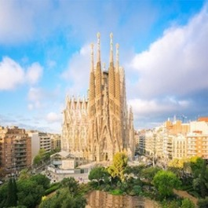

Informació
La ciutat de Barcelona és coneguda com a Ciutat Comtal ja que, al segle IX, tot el nord de Catalunya era terra de comtes i comtats. Dit altrament, era una autèntica comarca de l'imperi carolingi, coneguda com a Marca Hispànica.
Barcelona és la capital de Catalunya. Es troba situada al nord-est d'Espanya, a poca distància de França i dels Pirineus.
La ciutat s'acosta a una població de 1.700.000 habitants, sent la ciutat més poblada d'Espanya per darrere de Madrid. L’àrea metropolitana de Barcelona està constituïda per 36 municipis amb una població de més de 5 milions d'habitants.
Imatge
